材料 5個分
※粉量を変えると自動計算されます
生地
折り込み・トッピング
作り方
生地
STEP 1
ホームベーカリーに材料を入れ10分捏ねる
薄力粉を多めに配合した生地です。ホームベーカリーで10分ほど混ぜ、粉気がなくなってひとまとまりになればOKです。このあと伸ばしながらバターを折り込むため、ここで捏ねすぎてグルテンを強くしないようにします。
薄力粉を多めに配合した生地です。ホームベーカリーで10分ほど混ぜ、粉気がなくなってひとまとまりになればOKです。このあと伸ばしながらバターを折り込むため、ここで捏ねすぎてグルテンを強くしないようにします。
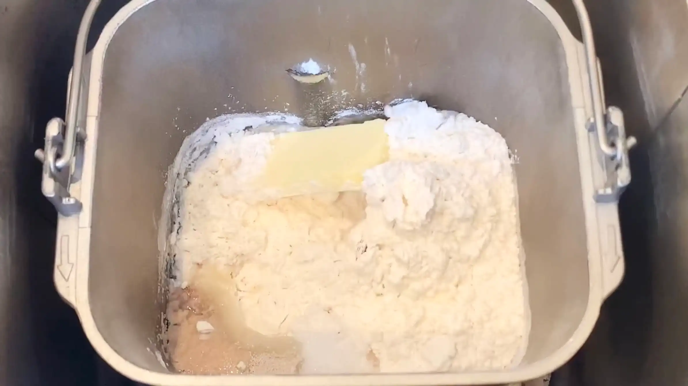
STEP 2
生地を丸めて、常温で40分おく
取り出した生地を丸めて表面を整え、乾燥しないようにボウルをかぶせます。40分休ませて生地をゆるめておくと、次に30㎝四方へ伸ばすときにスムーズです。
取り出した生地を丸めて表面を整え、乾燥しないようにボウルをかぶせます。40分休ませて生地をゆるめておくと、次に30㎝四方へ伸ばすときにスムーズです。
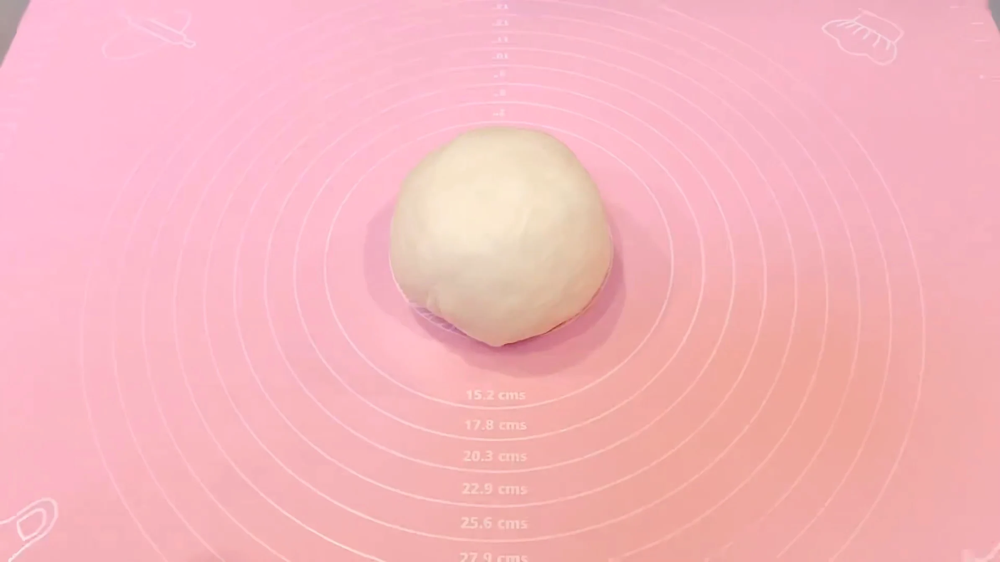
STEP 3
折り込み用バターを5g×18枚に切り分けておく
一般的にはバターをシート状にして折り込みますが、このレシピでは切り分けたバターをそのまま生地にのせます。折り込み用のバター90gを5gずつ18枚に切り、並べたときに偏りが出ないよう大きさをそろえておきます。
一般的にはバターをシート状にして折り込みますが、このレシピでは切り分けたバターをそのまま生地にのせます。折り込み用のバター90gを5gずつ18枚に切り、並べたときに偏りが出ないよう大きさをそろえておきます。
STEP 4
生地を30㎝四方に伸ばす（[動画 02:57]）
めん棒を中央から左上、右上、左下、右下へと外側に動かして、30㎝四方の正方形に伸ばします。四隅まで均等に力をかけると、形が自然に整います。
めん棒を中央から左上、右上、左下、右下へと外側に動かして、30㎝四方の正方形に伸ばします。四隅まで均等に力をかけると、形が自然に整います。
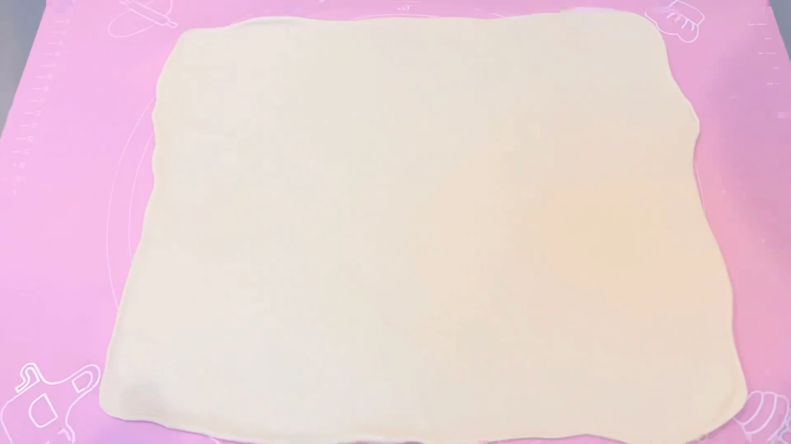
STEP 5
生地にバターを並べる
切り分けた18枚のバターを、画像を参考に、生地の上へ均等に並べます。
切り分けた18枚のバターを、画像を参考に、生地の上へ均等に並べます。
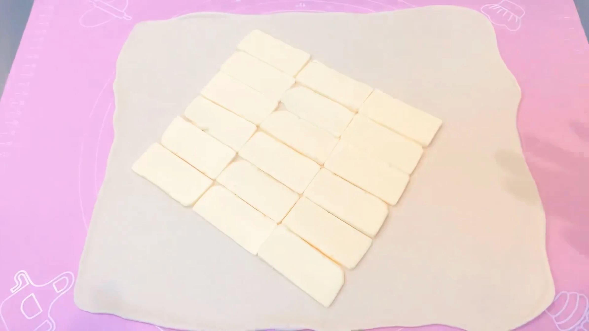
STEP 6
生地でバターを包む
生地の端を合わせて、18枚のバターを隙間なく包み込みます。バターが外にはみ出さないよう、閉じ目をしっかり押さえます。
生地の端を合わせて、18枚のバターを隙間なく包み込みます。バターが外にはみ出さないよう、閉じ目をしっかり押さえます。
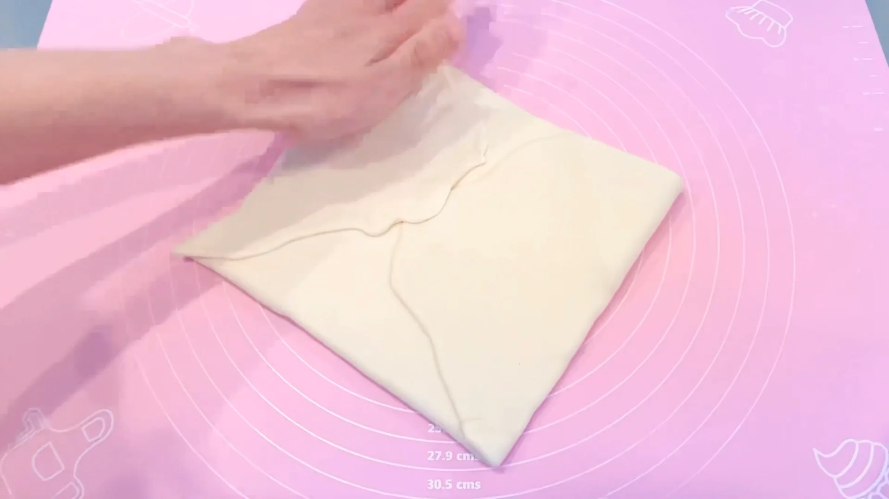
STEP 7
生地35㎝×40㎝に伸ばす（[動画 03:40]）
バターを包んだ直後は、生地もバターも固くなっています。最初はめん棒を転がさず、中心から外側へ押すように伸ばし、少しなじんできたら、めん棒を転がして35㎝×40㎝の均一な厚さに整えます。
バターを包んだ直後は、生地もバターも固くなっています。最初はめん棒を転がさず、中心から外側へ押すように伸ばし、少しなじんできたら、めん棒を転がして35㎝×40㎝の均一な厚さに整えます。
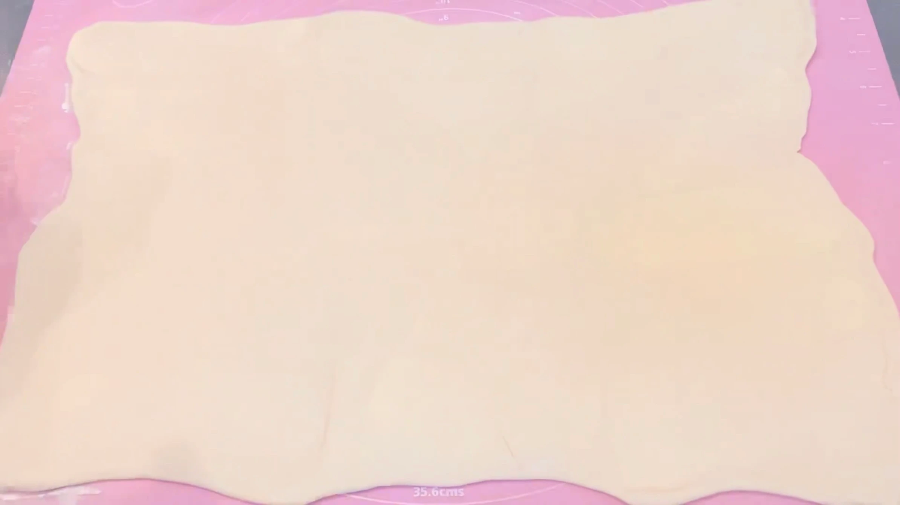
STEP 8
四つ折りにする（[動画 03:50]）
四つ折りにすることで、一度の折り込みで多くの層を作ることができます。折り目や端をできるだけそろえておくと、生地とバターのずれが少なくなり、次の伸ばし作業がしやすくなります。
四つ折りにすることで、一度の折り込みで多くの層を作ることができます。折り目や端をできるだけそろえておくと、生地とバターのずれが少なくなり、次の伸ばし作業がしやすくなります。
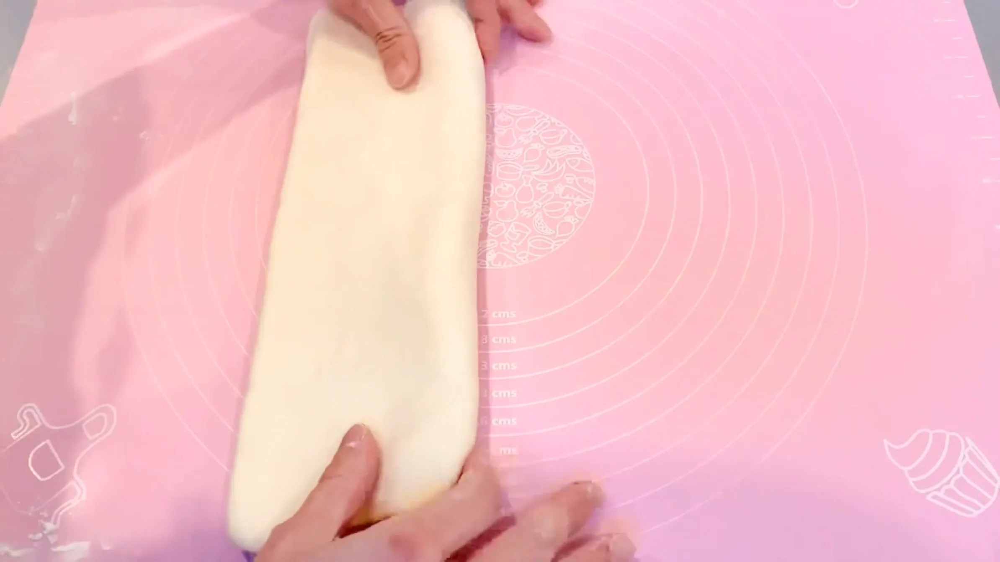
STEP 9
生地を長い方向に50㎝に伸ばす（[動画 04:12]）
折り込み後の生地は、折り目に対して伸ばしやすい方向があります。生地の断面を確認し、その方向に50㎝まで伸ばしていきます。STEP7同様、最初はめん棒で中心から外側に向かって押すように伸ばし、生地が伸ばしやすくなってきたら、めん棒を転がして均一な厚さに伸ばします。
折り込み後の生地は、折り目に対して伸ばしやすい方向があります。生地の断面を確認し、その方向に50㎝まで伸ばしていきます。STEP7同様、最初はめん棒で中心から外側に向かって押すように伸ばし、生地が伸ばしやすくなってきたら、めん棒を転がして均一な厚さに伸ばします。
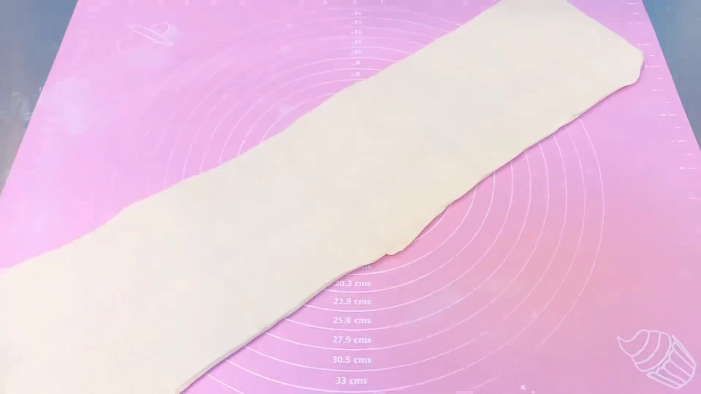
STEP 10
生地を裏返して、三つ折りにする（[動画 04:21]）
伸ばし作業で、生地の裏にバターがはみ出していることがあるため、一度生地を裏返し、はみ出したバターを中に包み込むように三つ折りにします。四つ折りと三つ折りを組み合わせることで、折り込み回数を増やしすぎず、焼き上がりにサクサクした層を作りやすくします。
伸ばし作業で、生地の裏にバターがはみ出していることがあるため、一度生地を裏返し、はみ出したバターを中に包み込むように三つ折りにします。四つ折りと三つ折りを組み合わせることで、折り込み回数を増やしすぎず、焼き上がりにサクサクした層を作りやすくします。
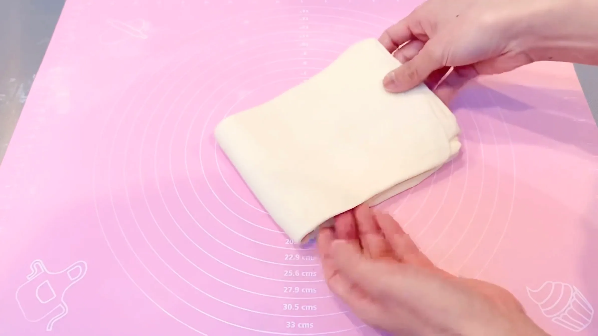
STEP 11
ラップをして、30分冷凍する
四つ折りと三つ折りを終えた生地をラップで包み、冷凍庫で30分冷やします。やわらかくなったバターが締まって、次に20㎝×50㎝へ伸ばしやすくなり、重ねた層も崩れにくくなります。
四つ折りと三つ折りを終えた生地をラップで包み、冷凍庫で30分冷やします。やわらかくなったバターが締まって、次に20㎝×50㎝へ伸ばしやすくなり、重ねた層も崩れにくくなります。
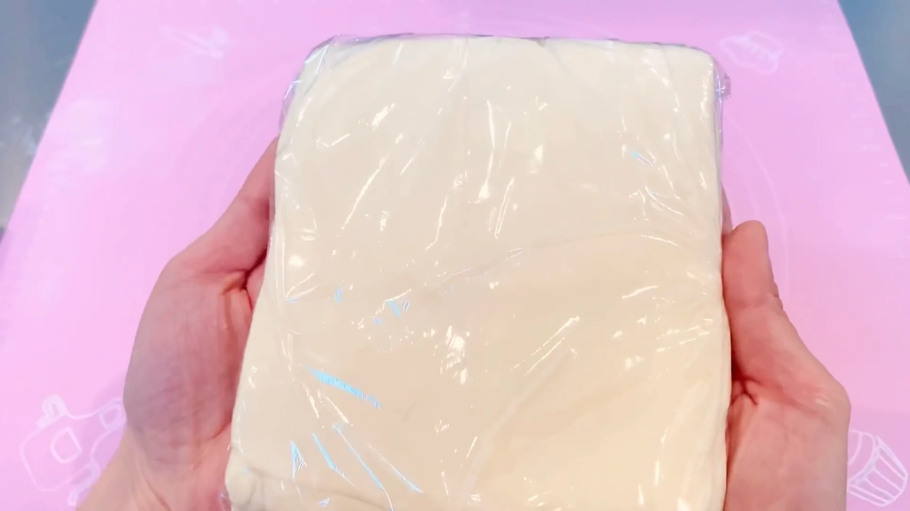
STEP 12
生地を20㎝×50㎝に伸ばす（[動画 04:48]）
冷凍した直後の生地はとても固いので、最初は無理に伸ばさず、めん棒で押しながら少しずつ広げます。やわらかくなってきたら、めん棒を転がして20㎝×50㎝の長方形に整えます。この長い生地を、次の工程で端から巻いていきます。
冷凍した直後の生地はとても固いので、最初は無理に伸ばさず、めん棒で押しながら少しずつ広げます。やわらかくなってきたら、めん棒を転がして20㎝×50㎝の長方形に整えます。この長い生地を、次の工程で端から巻いていきます。
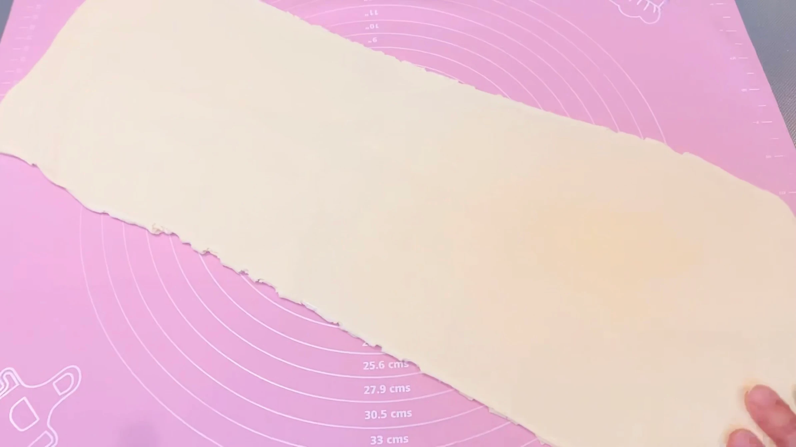
STEP 13
端から生地を巻く
巻き始めは、生地の端で芯を作るようにすると巻きやすくなります。太さが均一になるように、左右をバランス良く巻き進めていきます。巻き終わりには水を塗り、軽く閉じることで、生地がほどけてこないようにしておきます。
巻き始めは、生地の端で芯を作るようにすると巻きやすくなります。太さが均一になるように、左右をバランス良く巻き進めていきます。巻き終わりには水を塗り、軽く閉じることで、生地がほどけてこないようにしておきます。
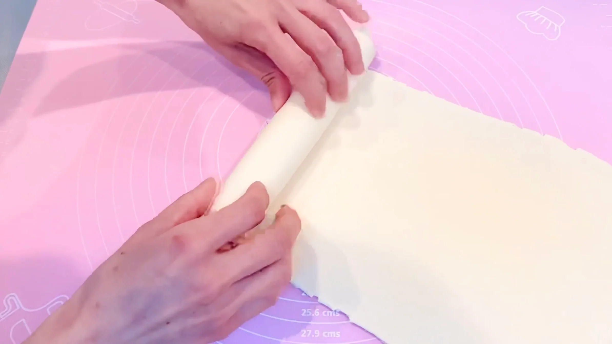
STEP 14
3㎝幅に糸で切り分ける
包丁で押し切ると生地がつぶれやすいため、糸を使って切り分けることで、巻いた生地の形を保ったままきれいにカットできます。
包丁で押し切ると生地がつぶれやすいため、糸を使って切り分けることで、巻いた生地の形を保ったままきれいにカットできます。
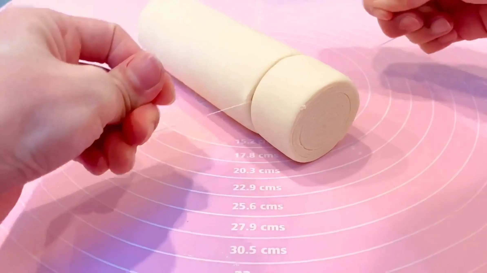
STEP 15
天板に並べ、ラップをして常温で2時間おく
画像ではセルクルを使っていますが、使う必要はありません。（セルクルなしでも綺麗な形に焼き上がりました）天板にそのまま生地を並べていきます。両端の生地は断面が不揃いのため、ニューヨークロールとしては使わず、マフィン型に入れて発酵させます。一度冷やした生地は発酵が進むまでに時間がかかるため、2時間を目安においていきます。薄力粉が多い生地のため、パン生地ほど大きくは膨らみませんので、少し生地がふんわりしたら次の工程へ進みます。
画像ではセルクルを使っていますが、使う必要はありません。（セルクルなしでも綺麗な形に焼き上がりました）天板にそのまま生地を並べていきます。両端の生地は断面が不揃いのため、ニューヨークロールとしては使わず、マフィン型に入れて発酵させます。一度冷やした生地は発酵が進むまでに時間がかかるため、2時間を目安においていきます。薄力粉が多い生地のため、パン生地ほど大きくは膨らみませんので、少し生地がふんわりしたら次の工程へ進みます。
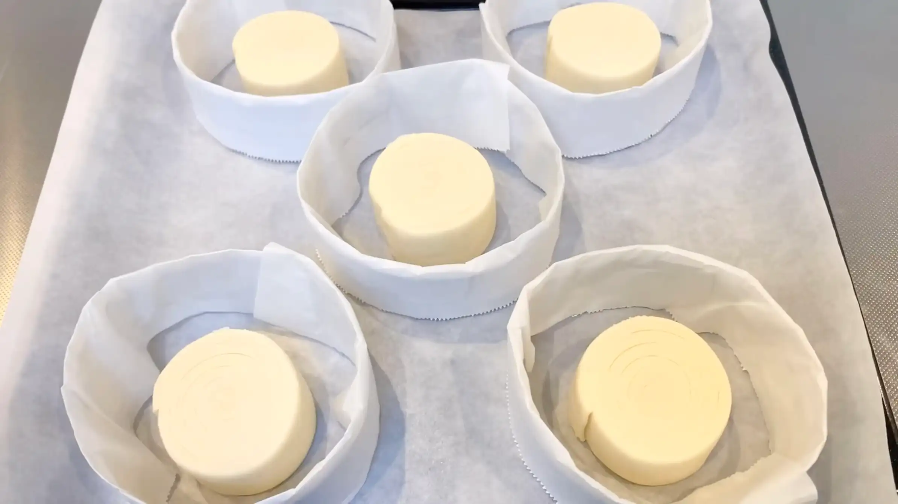
STEP 16
表面に豆乳または牛乳を塗り、予熱したオーブン190℃で15分〜20分焼く
ニューヨークロールは、型を使い綺麗な円柱形に焼き上げるのが特徴ですが、本レシピでは型なしで焼いていきます。まずは表面に5割程度の焼き色がつくまで、15分を目安に焼いていきます。オーブンによって焼き上がりが異なるため、必要に応じて焼き時間を調整してください。
ニューヨークロールは、型を使い綺麗な円柱形に焼き上げるのが特徴ですが、本レシピでは型なしで焼いていきます。まずは表面に5割程度の焼き色がつくまで、15分を目安に焼いていきます。オーブンによって焼き上がりが異なるため、必要に応じて焼き時間を調整してください。
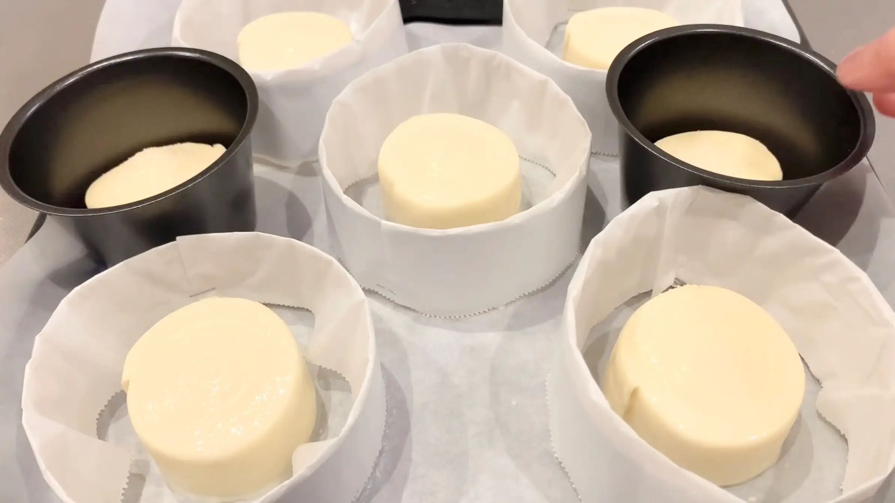
STEP 17
一度取り出し、生地をひっくり返す（[動画 08:24]）
型なしで焼く場合、この段階でどうしても渦巻きが飛び出してきます。綺麗な円柱形に仕上げるために、ここで一度生地をひっくり返し、表裏を平らに焼き上げます。（焼成中の生地を取り出す、というのは少し邪道ですが、とても美味しく焼き上がったので良しとしています。）
型なしで焼く場合、この段階でどうしても渦巻きが飛び出してきます。綺麗な円柱形に仕上げるために、ここで一度生地をひっくり返し、表裏を平らに焼き上げます。（焼成中の生地を取り出す、というのは少し邪道ですが、とても美味しく焼き上がったので良しとしています。）
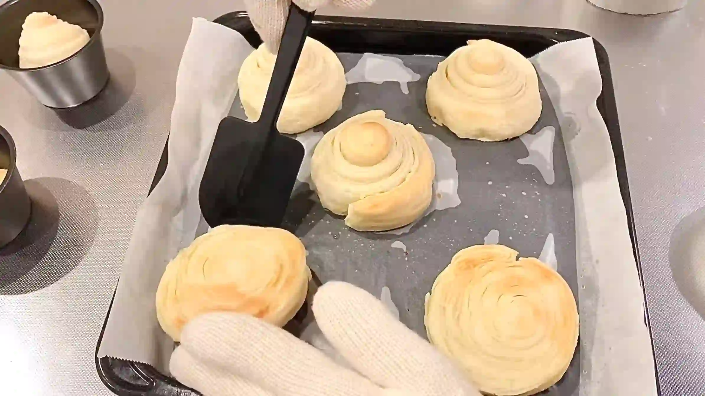
STEP 18
オーブン190℃でさらに10分焼く
ひっくり返した生地を、190℃でさらに10分焼きます。表面と底の両面にこんがり焼き色がつくまで、様子を見ながら焼いてください。生地の大きさやオーブンによって、時間は前後します。
ひっくり返した生地を、190℃でさらに10分焼きます。表面と底の両面にこんがり焼き色がつくまで、様子を見ながら焼いてください。生地の大きさやオーブンによって、時間は前後します。
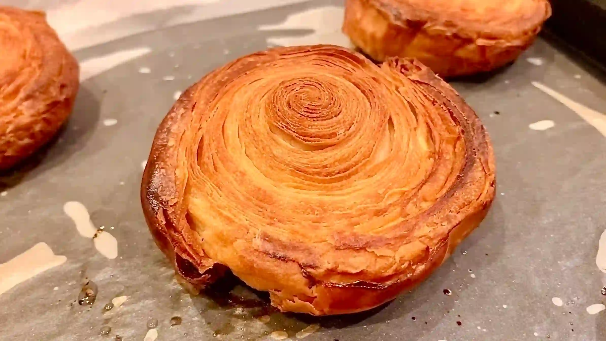
STEP 19
生地を冷まし、デコレーションする（[動画 10:28]）
生地が温かいとチョコレートが流れやすいため、完全に冷めてからデコレーションします。湯煎で溶かしたチョコレートをスプーンでそっとかけ、端から自然に垂れるくらいにすると、ニューヨークロールらしい可愛い仕上がりになります。
生地が温かいとチョコレートが流れやすいため、完全に冷めてからデコレーションします。湯煎で溶かしたチョコレートをスプーンでそっとかけ、端から自然に垂れるくらいにすると、ニューヨークロールらしい可愛い仕上がりになります。
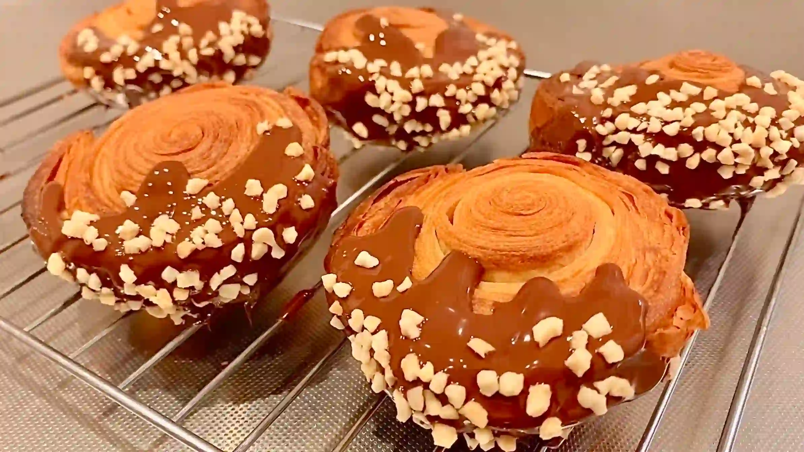
動画でチェック
おいしく作るためのワンポイントコラム
こんにちは、おなおドーナツです！
今回は、サクサクのデニッシュ生地と美しい渦巻き模様が魅力的な『ニューヨークロール』を作っていきます。一見ハードルが高く見える折り込み生地ですが、丁寧に層を重ねることで、おうちでもお店のような本格的な焼き上がりを楽しめます。綺麗なビジュアルと絶妙な食感を生み出すための2つのコツをまとめました。
① 生地の配合のコツ
上質な食感と風味を再現するために、今回は薄力粉3：強力粉1の割合で粉をブレンドし、さらに粉に対して45%のバターをリッチに折り込んで仕込みます。強力粉の割合を抑えて薄力粉を多く配合することでグルテンの形成が適度に抑えられ、たっぷりのバターが焼成の際に水蒸気を発することで層を押し広げ、サクッと歯切れの良い本格的なデニッシュ生地に仕上がります。
② 美しく焼き上げる焼成のコツ
ニューヨークロール特有の綺麗な丸い平らな形に仕上げるためには、焼き方にひと工夫が必要です。本来は上からもう1枚の天板をかぶせて膨らみを抑えて焼きますが、2枚目の天板がない場合は、オーブンの途中で一度生地を取り出し、ひっくり返して天板に押し付けるようにして再度焼くのがコツです。こうして両面を平らに焼き上げることで、渦巻きの綺麗な層が均一に整い、型崩れのない美しいビジュアルに仕上がります。
ひと手間かけて焼き上げた生地に、ツヤツヤのチョコと香ばしいアーモンドをトッピングする瞬間は最高にわくわくですね。それでは、おうちパン作りの時間を一緒に満喫しましょう！
今回は、サクサクのデニッシュ生地と美しい渦巻き模様が魅力的な『ニューヨークロール』を作っていきます。一見ハードルが高く見える折り込み生地ですが、丁寧に層を重ねることで、おうちでもお店のような本格的な焼き上がりを楽しめます。綺麗なビジュアルと絶妙な食感を生み出すための2つのコツをまとめました。
① 生地の配合のコツ
上質な食感と風味を再現するために、今回は薄力粉3：強力粉1の割合で粉をブレンドし、さらに粉に対して45%のバターをリッチに折り込んで仕込みます。強力粉の割合を抑えて薄力粉を多く配合することでグルテンの形成が適度に抑えられ、たっぷりのバターが焼成の際に水蒸気を発することで層を押し広げ、サクッと歯切れの良い本格的なデニッシュ生地に仕上がります。
② 美しく焼き上げる焼成のコツ
ニューヨークロール特有の綺麗な丸い平らな形に仕上げるためには、焼き方にひと工夫が必要です。本来は上からもう1枚の天板をかぶせて膨らみを抑えて焼きますが、2枚目の天板がない場合は、オーブンの途中で一度生地を取り出し、ひっくり返して天板に押し付けるようにして再度焼くのがコツです。こうして両面を平らに焼き上げることで、渦巻きの綺麗な層が均一に整い、型崩れのない美しいビジュアルに仕上がります。
ひと手間かけて焼き上げた生地に、ツヤツヤのチョコと香ばしいアーモンドをトッピングする瞬間は最高にわくわくですね。それでは、おうちパン作りの時間を一緒に満喫しましょう！


幾重にも重なる美しい層と丸いフォルムが目を引く、ニューヨーク発祥の話題のスイーツ『ニューヨークロール』のレシピです！今回は本格的な味わいをおうちで楽しめるよう、こだわりの折り込み生地で作ります。コラムでは「生地の配合のコツ」「美しく焼き上げる焼成のコツ」の2つのポイントをご紹介します。